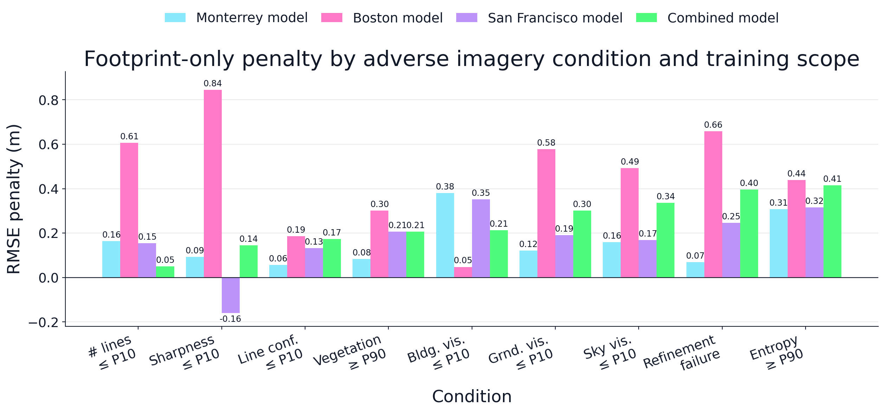

import json
import numpy as np
import pandas as pd
import joblib
import matplotlib.pyplot as plt
from imageable.visualization.data_visualization import plot_grouped_distribution_bars
def filter_dictionary_list(list, property_name, value):
return [x for x in list if x[property_name] == value]
def compute_mse(ground_truths, predicted_values):
mse = 0
n_data = len(ground_truths)
for i in range(n_data):
y_truth = ground_truths[i]
y_predicted = predicted_values[i]
mse += ((y_truth - y_predicted)**2)/n_data
return mse
def compute_rmse(ground_truths, predicted_values):
mse = compute_mse(ground_truths, predicted_values)
return np.sqrt(mse)
def filter_by_indices(values, indices):
"""
Return only the values at locations indicated in indices.
"""
new_values = []
for i in range(0,len(values)):
if (i in indices):
new_values.append(values[i])
return new_values
def binarize_values(
original_values,
percentile = 75
):
high_value_percentile = np.percentile(original_values, percentile)
low_mid_values = []
high_values = []
low_mid_indices = []
high_indices = []
for i in range(0,len(original_values)):
value = original_values[i]
if(value > high_value_percentile):
high_values.append(value)
high_indices.append(i)
else:
low_mid_values.append(value)
low_mid_indices.append(i)
return low_mid_values, high_values, low_mid_indices, high_indicesExperiment 3
Define auxiliary functions
Load the models
#Necessary paths
PATH_CTP_POOLED = "/Users/legariapena.j/Documents/imageable-2026/imageable/clustering-paper-notebooks/imageable-3-cities-experiments-notebooks/dummy_data/cluster_ensemble_model_pooled_3_cities.pkl"
ctp_model_pooled = joblib.load(PATH_CTP_POOLED)
PATH_CTP_MONTERREY = "/Users/legariapena.j/Documents/imageable-2026/imageable/clustering-paper-notebooks/imageable-3-cities-experiments-notebooks/dummy_data/cluster_ensemble_model_monterrey.pkl"
ctp_model_monterrey = joblib.load(PATH_CTP_MONTERREY)
PATH_CTP_BOSTON = "/Users/legariapena.j/Documents/imageable-2026/imageable/clustering-paper-notebooks/imageable-3-cities-experiments-notebooks/dummy_data/cluster_ensemble_model_boston.pkl"
ctp_model_boston = joblib.load(PATH_CTP_BOSTON)
PATH_CTP_SF = "/Users/legariapena.j/Documents/imageable-2026/imageable/clustering-paper-notebooks/imageable-3-cities-experiments-notebooks/dummy_data/cluster_ensemble_model_sanfrancisco.pkl"
ctp_model_san_francisco = joblib.load(PATH_CTP_SF)
PATH_SINGLE_POOLED = "/Users/legariapena.j/Documents/imageable-2026/imageable/clustering-paper-notebooks/imageable-3-cities-experiments-notebooks/dummy_data/single_xgb_model_pooled_3_cities.pkl"
single_model_pooled = joblib.load(PATH_SINGLE_POOLED)
PATH_SINGLE_MONTERREY = "/Users/legariapena.j/Documents/imageable-2026/imageable/clustering-paper-notebooks/imageable-3-cities-experiments-notebooks/dummy_data/single_xgb_model_monterrey.pkl"
single_model_monterrey = joblib.load(PATH_SINGLE_MONTERREY)
PATH_SINGLE_BOSTON = "/Users/legariapena.j/Documents/imageable-2026/imageable/clustering-paper-notebooks/imageable-3-cities-experiments-notebooks/dummy_data/single_xgb_model_boston.pkl"
single_model_boston = joblib.load(PATH_SINGLE_BOSTON)
PATH_SINGLE_SF = "/Users/legariapena.j/Documents/imageable-2026/imageable/clustering-paper-notebooks/imageable-3-cities-experiments-notebooks/dummy_data/single_xgb_model_sanfrancisco.pkl"
single_model_san_francisco = joblib.load(PATH_SINGLE_SF)
PATH_FOOTPRINT_POOLED = "/Users/legariapena.j/Documents/imageable-2026/imageable/clustering-paper-notebooks/imageable-3-cities-experiments-notebooks/dummy_data/footprint_xgb_model_pooled_3_cities.pkl"
footprint_model_pooled = joblib.load(PATH_FOOTPRINT_POOLED)
PATH_FOOTPRINT_MONTERREY = "/Users/legariapena.j/Documents/imageable-2026/imageable/clustering-paper-notebooks/imageable-3-cities-experiments-notebooks/dummy_data/footprint_xgb_model_monterrey.pkl"
footprint_model_monterrey = joblib.load(PATH_FOOTPRINT_MONTERREY)
PATH_FOOTPRINT_BOSTON = "/Users/legariapena.j/Documents/imageable-2026/imageable/clustering-paper-notebooks/imageable-3-cities-experiments-notebooks/dummy_data/footprint_xgb_model_boston.pkl"
footprint_model_boston = joblib.load(PATH_FOOTPRINT_BOSTON)
PATH_FOOTPRINT_SF = "/Users/legariapena.j/Documents/imageable-2026/imageable/clustering-paper-notebooks/imageable-3-cities-experiments-notebooks/dummy_data/footprint_xgb_model_sanfrancisco.pkl"
footprint_model_san_francisco = joblib.load(PATH_FOOTPRINT_SF)Open the data
DATA_PATH = "/Users/legariapena.j/Documents/imageable-2026/imageable/clustering-paper-notebooks/imageable-3-cities-experiments-notebooks/dummy_data"
with open(f"{DATA_PATH}/data_monterrey.json") as f:
data_monterrey = json.load(f)
with open(f"{DATA_PATH}/data_boston.json") as f:
data_boston = json.load(f)
with open(f"{DATA_PATH}/data_sanfrancisco.json") as f:
data_sanfrancisco = json.load(f)
with open(f"{DATA_PATH}/data_pooled_3_cities.json") as f:
data_pooled = json.load(f)
DESCRIPTORS_PATH = "/Users/legariapena.j/Documents/imageable-2026/imageable/paper-clustering/experiments"
with open(f"{DESCRIPTORS_PATH}/monterrey/results/preparation_experiment_3.json") as f:
descriptors_monterrey = json.load(f)
with open(f"{DESCRIPTORS_PATH}/boston/results/preparation_experiment_3.json") as f:
descriptors_boston = json.load(f)
with open(f"{DESCRIPTORS_PATH}/sanfrancisco/results/preparation_experiment_3.json") as f:
descriptors_sanfrancisco = json.load(f)
with open(f"{DESCRIPTORS_PATH}/pooled/results/preparation_experiment_3.json") as f:
descriptors_pooled = json.load(f)Define the experiment function
def run_experiment_3(
city,
condition,
validation_dictionaries,
ctp_city_model,
ctp_combined_model,
footprint_city_model,
footprint_combined_model,
):
results = {}
all_features = np.array([x["features"] for x in validation_dictionaries])
all_heights = [x["real_height"] for x in validation_dictionaries]
predictions_ctp_city_model = ctp_city_model.predict(all_features)
predictions_ctp_combined_model = ctp_combined_model.predict(all_features)
#The footprint models only use the 13 footprint features, which come first.
predictions_footprint_city_model = footprint_city_model.predict(all_features[:, :13])
predictions_footprint_combined_model = footprint_combined_model.predict(all_features[:, :13])
rmse_ctp_city = compute_rmse(all_heights, predictions_ctp_city_model)
rmse_ctp_combined = compute_rmse(all_heights, predictions_ctp_combined_model)
rmse_footprint_city = compute_rmse(all_heights, predictions_footprint_city_model)
rmse_footprint_combined = compute_rmse(all_heights, predictions_footprint_combined_model)
results["N"] = len(validation_dictionaries)
results["Condition"] = condition
results["City"] = city
results["C_city - C_comb"] = rmse_ctp_city - rmse_ctp_combined
results["F_city - F_comb"] = rmse_footprint_city - rmse_footprint_combined
results["F_city - C_city"] = rmse_footprint_city - rmse_ctp_city
results["F_comb - C_comb"] = rmse_footprint_combined - rmse_ctp_combined
return resultsDefine the conditions
CONDITIONS = [
"Failed view refinement",
"Few detected lines",
"Low line confidence",
"Low facade visibility",
"Low sky visibility",
"Low ground visibility",
"Low sharpness",
"High image entropy",
"High facade vegetation"
]
def get_condition_dictionaries(validation_dictionaries, descriptors, condition):
descriptors_by_index = {x["data_index"]: x for x in descriptors}
building_descriptors = [descriptors_by_index[x["index"]] for x in validation_dictionaries]
if(condition == "Failed view refinement"):
indices = [i for i in range(0,len(building_descriptors)) if building_descriptors[i]["refinement_success"] == False]
return filter_by_indices(validation_dictionaries, indices)
if(condition == "Few detected lines"):
values = [len(x["lines"]) for x in building_descriptors]
elif(condition == "Low line confidence"):
values = [np.mean(x["scores"]) for x in building_descriptors]
elif(condition == "Low facade visibility"):
values = [x["facade_ratio"] for x in building_descriptors]
elif(condition == "Low sky visibility"):
values = [x["sky_ratio"] for x in building_descriptors]
elif(condition == "Low ground visibility"):
values = [x["ground_ratio"] for x in building_descriptors]
elif(condition == "Low sharpness"):
values = [x["sharpness"] for x in building_descriptors]
elif(condition == "High image entropy"):
values = [x["image_entropy"] for x in building_descriptors]
elif(condition == "High facade vegetation"):
index_of_feature = validation_dictionaries[0]["feature_names"].index("material_pct_leaf")
values = [x["features"][index_of_feature] for x in validation_dictionaries]
#The high conditions keep the buildings above the 90th percentile, the others the ones at or below the 10th.
if(condition.startswith("High")):
low_values, high_values, low_indices, high_indices = binarize_values(values, percentile = 90)
return filter_by_indices(validation_dictionaries, high_indices)
low_values, high_values, low_indices, high_indices = binarize_values(values, percentile = 10)
return filter_by_indices(validation_dictionaries, low_indices)Getting all rows
city_models = {
"Monterrey": (ctp_model_monterrey, footprint_model_monterrey),
"Boston": (ctp_model_boston, footprint_model_boston),
"San Francisco": (ctp_model_san_francisco, footprint_model_san_francisco)
}
city_data = {
"Monterrey": (data_monterrey, descriptors_monterrey),
"Boston": (data_boston, descriptors_boston),
"San Francisco": (data_sanfrancisco, descriptors_sanfrancisco)
}
all_rows = []
for condition in CONDITIONS:
for city in city_models:
data, descriptors = city_data[city]
validation_dictionaries = filter_dictionary_list(data, "data_type", "validation")
condition_dictionaries = get_condition_dictionaries(validation_dictionaries, descriptors, condition)
ctp_city_model, footprint_city_model = city_models[city]
results = run_experiment_3(
city,
condition,
condition_dictionaries,
ctp_city_model,
ctp_model_pooled,
footprint_city_model,
footprint_model_pooled
)
all_rows.append(results)
TABLE_COLUMNS = [
"N",
"Condition",
"City",
"C_city - C_comb",
"F_city - F_comb",
"F_city - C_city",
"F_comb - C_comb"
]
dataframe_dictionary = {column: [x[column] for x in all_rows] for column in TABLE_COLUMNS}
dataframe = pd.DataFrame(data = dataframe_dictionary).round(2)
dataframe| N | Condition | City | C_city - C_comb | F_city - F_comb | F_city - C_city | F_comb - C_comb | |
|---|---|---|---|---|---|---|---|
| 0 | 609 | Failed view refinement | Monterrey | -0.32 | -0.06 | 0.07 | -0.19 |
| 1 | 737 | Failed view refinement | Boston | -0.18 | -0.37 | 0.66 | 0.85 |
| 2 | 700 | Failed view refinement | San Francisco | 0.03 | 0.01 | 0.25 | 0.26 |
| 3 | 217 | Few detected lines | Monterrey | -0.19 | -0.18 | 0.16 | 0.16 |
| 4 | 199 | Few detected lines | Boston | -0.14 | -0.16 | 0.61 | 0.63 |
| 5 | 201 | Few detected lines | San Francisco | -0.34 | 0.27 | 0.15 | -0.45 |
| 6 | 217 | Low line confidence | Monterrey | -0.10 | 0.14 | 0.06 | -0.18 |
| 7 | 199 | Low line confidence | Boston | -0.20 | -0.25 | 0.19 | 0.23 |
| 8 | 199 | Low line confidence | San Francisco | -0.23 | -0.27 | 0.13 | 0.17 |
| 9 | 217 | Low facade visibility | Monterrey | -0.32 | -0.08 | 0.38 | 0.14 |
| 10 | 199 | Low facade visibility | Boston | -0.25 | -0.39 | 0.05 | 0.18 |
| 11 | 199 | Low facade visibility | San Francisco | -0.28 | -0.30 | 0.35 | 0.38 |
| 12 | 1008 | Low sky visibility | Monterrey | -0.17 | -0.02 | 0.16 | 0.01 |
| 13 | 764 | Low sky visibility | Boston | -0.10 | -0.35 | 0.49 | 0.75 |
| 14 | 843 | Low sky visibility | San Francisco | 0.04 | 0.00 | 0.17 | 0.21 |
| 15 | 890 | Low ground visibility | Monterrey | -0.29 | -0.11 | 0.12 | -0.06 |
| 16 | 883 | Low ground visibility | Boston | -0.19 | -0.28 | 0.58 | 0.67 |
| 17 | 1028 | Low ground visibility | San Francisco | -0.03 | 0.01 | 0.19 | 0.15 |
| 18 | 217 | Low sharpness | Monterrey | -0.14 | 0.28 | 0.09 | -0.33 |
| 19 | 199 | Low sharpness | Boston | -0.55 | -0.47 | 0.84 | 0.77 |
| 20 | 199 | Low sharpness | San Francisco | -0.37 | -0.18 | -0.16 | -0.35 |
| 21 | 217 | High image entropy | Monterrey | -0.14 | -0.18 | 0.31 | 0.34 |
| 22 | 199 | High image entropy | Boston | -0.29 | -0.35 | 0.44 | 0.50 |
| 23 | 199 | High image entropy | San Francisco | -0.19 | -0.77 | 0.32 | 0.90 |
| 24 | 217 | High facade vegetation | Monterrey | -0.30 | -0.13 | 0.08 | -0.09 |
| 25 | 199 | High facade vegetation | Boston | -0.59 | -0.78 | 0.30 | 0.49 |
| 26 | 199 | High facade vegetation | San Francisco | 0.02 | 0.14 | 0.21 | 0.08 |
City table
table_dictionary = {"Condition": CONDITIONS}
for city in city_models:
for column in ["C_city - C_comb", "F_city - F_comb"]:
table_dictionary[f"{city} {column}"] = [x[column] for x in all_rows if x["City"] == city]
table = pd.DataFrame(data = table_dictionary).round(2)
table| Condition | Monterrey C_city - C_comb | Monterrey F_city - F_comb | Boston C_city - C_comb | Boston F_city - F_comb | San Francisco C_city - C_comb | San Francisco F_city - F_comb | |
|---|---|---|---|---|---|---|---|
| 0 | Failed view refinement | -0.32 | -0.06 | -0.18 | -0.37 | 0.03 | 0.01 |
| 1 | Few detected lines | -0.19 | -0.18 | -0.14 | -0.16 | -0.34 | 0.27 |
| 2 | Low line confidence | -0.10 | 0.14 | -0.20 | -0.25 | -0.23 | -0.27 |
| 3 | Low facade visibility | -0.32 | -0.08 | -0.25 | -0.39 | -0.28 | -0.30 |
| 4 | Low sky visibility | -0.17 | -0.02 | -0.10 | -0.35 | 0.04 | 0.00 |
| 5 | Low ground visibility | -0.29 | -0.11 | -0.19 | -0.28 | -0.03 | 0.01 |
| 6 | Low sharpness | -0.14 | 0.28 | -0.55 | -0.47 | -0.37 | -0.18 |
| 7 | High image entropy | -0.14 | -0.18 | -0.29 | -0.35 | -0.19 | -0.77 |
| 8 | High facade vegetation | -0.30 | -0.13 | -0.59 | -0.78 | 0.02 | 0.14 |
Penalty figure
def run_experiment_3_all_cities(
condition,
validation_dictionaries,
ctp_combined_model,
footprint_combined_model,
):
results = {}
all_features = np.array([x["features"] for x in validation_dictionaries])
all_heights = [x["real_height"] for x in validation_dictionaries]
predictions_ctp_combined_model = ctp_combined_model.predict(all_features)
predictions_footprint_combined_model = footprint_combined_model.predict(all_features[:, :13])
rmse_ctp_combined = compute_rmse(all_heights, predictions_ctp_combined_model)
rmse_footprint_combined = compute_rmse(all_heights, predictions_footprint_combined_model)
results["N"] = len(validation_dictionaries)
results["Condition"] = condition
results["F_comb - C_comb"] = rmse_footprint_combined - rmse_ctp_combined
return results
validation_all_cities = filter_dictionary_list(data_pooled, "data_type", "validation")
all_cities_rows = []
for condition in CONDITIONS:
condition_dictionaries = get_condition_dictionaries(validation_all_cities, descriptors_pooled, condition)
results = run_experiment_3_all_cities(
condition,
condition_dictionaries,
ctp_model_pooled,
footprint_model_pooled
)
all_cities_rows.append(results)
CONDITION_LABELS = {
"Failed view refinement": "Refinement\nfailure",
"Few detected lines": "# lines\n≤ P10",
"Low line confidence": "Line conf.\n≤ P10",
"Low facade visibility": "Bldg. vis.\n≤ P10",
"Low sky visibility": "Sky vis.\n≤ P10",
"Low ground visibility": "Grnd. vis.\n≤ P10",
"Low sharpness": "Sharpness\n≤ P10",
"High image entropy": "Entropy\n≥ P90",
"High facade vegetation": "Vegetation\n≥ P90"
}
#The conditions are sorted by the penalty of the combined model.
penalties_combined = {x["Condition"]: x["F_comb - C_comb"] for x in all_cities_rows}
conditions = sorted(CONDITIONS, key = lambda condition: penalties_combined[condition])
penalties = {}
for city in city_models:
city_penalties = {x["Condition"]: x["F_city - C_city"] for x in all_rows if x["City"] == city}
penalties[f"{city} model"] = [city_penalties[condition] for condition in conditions]
penalties["Combined model"] = [penalties_combined[condition] for condition in conditions]
plt.rcParams.update({
"axes.titlesize": 23,
"axes.labelsize": 18,
"xtick.labelsize": 14,
"ytick.labelsize": 14,
"legend.fontsize": 14,
})
figure, axes = plot_grouped_distribution_bars(
groups = [CONDITION_LABELS[condition] for condition in conditions],
model_names = list(penalties.keys()),
rmse = penalties,
show_n = False,
figsize = (13,6),
value_label_fontsize = 9,
title = "Footprint-only penalty by adverse imagery condition and training scope",
x_label = "Condition",
y_label = "RMSE penalty (m)",
savepath = None,
show = False,
order = "input"
)
#The same y axis and zero line as the figure in the paper.
lowest = min(0, min([min(values) for values in penalties.values()]))
axes.set_ylim(lowest - 0.06, axes.get_ylim()[1])
axes.axhline(0, color = "#111827", linewidth = 0.8)
figure.savefig("/Users/legariapena.j/Documents/imageable-2026/imageable/paper-clustering/figures/experiment_3_penalty_by_scope.png", bbox_inches = "tight", pad_inches = 0.03, dpi = 300)
Define the single model experiment function
def run_experiment_3_single_model(
city,
condition,
validation_dictionaries,
ctp_city_model,
ctp_combined_model,
single_city_model,
single_combined_model,
):
results = {}
all_features = np.array([x["features"] for x in validation_dictionaries])
all_heights = [x["real_height"] for x in validation_dictionaries]
predictions_ctp_city_model = ctp_city_model.predict(all_features)
predictions_ctp_combined_model = ctp_combined_model.predict(all_features)
predictions_single_city_model = single_city_model.predict(all_features)
predictions_single_combined_model = single_combined_model.predict(all_features)
rmse_ctp_city = compute_rmse(all_heights, predictions_ctp_city_model)
rmse_ctp_combined = compute_rmse(all_heights, predictions_ctp_combined_model)
rmse_single_city = compute_rmse(all_heights, predictions_single_city_model)
rmse_single_combined = compute_rmse(all_heights, predictions_single_combined_model)
results["N"] = len(validation_dictionaries)
results["Condition"] = condition
results["City"] = city
results["S_city - S_comb"] = rmse_single_city - rmse_single_combined
results["S_city - C_city"] = rmse_single_city - rmse_ctp_city
results["S_comb - C_comb"] = rmse_single_combined - rmse_ctp_combined
return resultsGetting all single model rows
city_single_models = {
"Monterrey": (ctp_model_monterrey, single_model_monterrey),
"Boston": (ctp_model_boston, single_model_boston),
"San Francisco": (ctp_model_san_francisco, single_model_san_francisco)
}
all_single_rows = []
for condition in CONDITIONS:
for city in city_single_models:
data, descriptors = city_data[city]
validation_dictionaries = filter_dictionary_list(data, "data_type", "validation")
condition_dictionaries = get_condition_dictionaries(validation_dictionaries, descriptors, condition)
ctp_city_model, single_city_model = city_single_models[city]
results = run_experiment_3_single_model(
city,
condition,
condition_dictionaries,
ctp_city_model,
ctp_model_pooled,
single_city_model,
single_model_pooled
)
all_single_rows.append(results)
SINGLE_TABLE_COLUMNS = [
"N",
"Condition",
"City",
"S_city - S_comb",
"S_city - C_city",
"S_comb - C_comb"
]
dataframe_dictionary = {column: [x[column] for x in all_single_rows] for column in SINGLE_TABLE_COLUMNS}
dataframe_single = pd.DataFrame(data = dataframe_dictionary).round(2)
dataframe_single| N | Condition | City | S_city - S_comb | S_city - C_city | S_comb - C_comb | |
|---|---|---|---|---|---|---|
| 0 | 609 | Failed view refinement | Monterrey | -0.79 | 0.12 | 0.58 |
| 1 | 737 | Failed view refinement | Boston | -0.10 | 0.17 | 0.09 |
| 2 | 700 | Failed view refinement | San Francisco | 0.04 | 0.04 | 0.03 |
| 3 | 217 | Few detected lines | Monterrey | -0.17 | 0.02 | 0.01 |
| 4 | 199 | Few detected lines | Boston | -0.12 | 0.17 | 0.14 |
| 5 | 201 | Few detected lines | San Francisco | -0.25 | 0.03 | -0.06 |
| 6 | 217 | Low line confidence | Monterrey | 0.00 | 0.01 | -0.09 |
| 7 | 199 | Low line confidence | Boston | -0.12 | -0.02 | -0.11 |
| 8 | 199 | Low line confidence | San Francisco | -0.35 | -0.03 | 0.09 |
| 9 | 217 | Low facade visibility | Monterrey | -0.15 | 0.15 | -0.02 |
| 10 | 199 | Low facade visibility | Boston | -0.31 | -0.01 | 0.04 |
| 11 | 199 | Low facade visibility | San Francisco | -0.26 | -0.05 | -0.07 |
| 12 | 1008 | Low sky visibility | Monterrey | -0.55 | 0.06 | 0.44 |
| 13 | 764 | Low sky visibility | Boston | -0.01 | 0.17 | 0.08 |
| 14 | 843 | Low sky visibility | San Francisco | 0.07 | 0.06 | 0.03 |
| 15 | 890 | Low ground visibility | Monterrey | -0.66 | 0.07 | 0.43 |
| 16 | 883 | Low ground visibility | Boston | -0.24 | 0.06 | 0.10 |
| 17 | 1028 | Low ground visibility | San Francisco | -0.06 | 0.01 | 0.05 |
| 18 | 217 | Low sharpness | Monterrey | 0.08 | 0.15 | -0.07 |
| 19 | 199 | Low sharpness | Boston | -0.63 | -0.03 | 0.05 |
| 20 | 199 | Low sharpness | San Francisco | 0.16 | 0.55 | 0.02 |
| 21 | 217 | High image entropy | Monterrey | -0.12 | 0.02 | -0.00 |
| 22 | 199 | High image entropy | Boston | -0.14 | 0.09 | -0.06 |
| 23 | 199 | High image entropy | San Francisco | -0.01 | 0.11 | -0.06 |
| 24 | 217 | High facade vegetation | Monterrey | -0.17 | 0.08 | -0.05 |
| 25 | 199 | High facade vegetation | Boston | -0.65 | -0.12 | -0.06 |
| 26 | 199 | High facade vegetation | San Francisco | 0.05 | 0.05 | 0.02 |